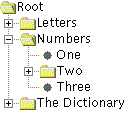
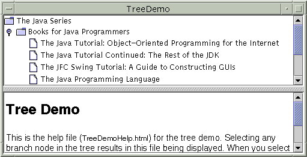
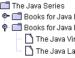
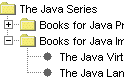
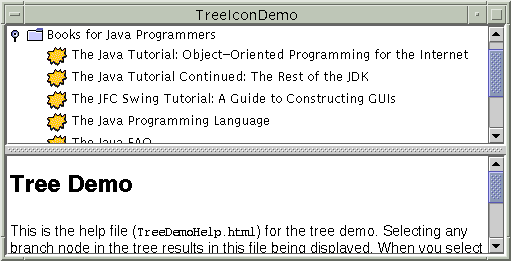
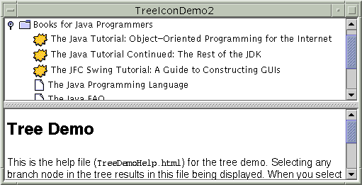
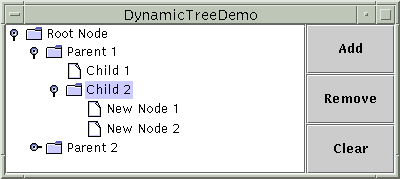
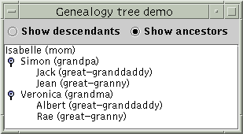

Feedback Form
|
|
Start of Tutorial > Start of Trail > Start of Lesson |
Search
Feedback Form |
With theJTreeclass, you can display hierarchical data. A
JTreeobject doesn't actually contain your data; it simply provides a view of the data. Like any non-trivial Swing component, the tree gets data by querying its data model. Here's a picture of a tree: [PENDING: This picture will be updated to show the Java look and feel. Labels will be added: "root node", "expanded branch node", "collapsed branch node", "leaf node".]As the preceding figure shows,
JTreedisplays its data vertically. Each row displayed by the tree contains exactly one item of data, which is called a node. Every tree has a root node from which all nodes descend. By default, the tree displays the root node, but you can decree otherwise. A node can either have children or not. We refer to nodes that can have children — whether or not they currently have children — as branch nodes. Nodes that can't have children are leaf nodes.Branch nodes can have any number of children. Typically, the user can expand and collapse branch nodes — making their children visible or invisible — by clicking them. By default, all branch nodes except the root node start out collapsed. A program can detect changes in branch nodes' expansion state by listening for tree expansion or tree-will-expand events, as described in How to Write a Tree Expansion Listener
and How to Write a Tree-Will-Expand Listener
The rest of this section discusses the following topics:
Here is a picture of an application, the top half of which displays a tree in a scroll pane. [PENDING: This picture will be updated]
Try this:
- Run TreeDemo using JavaTM Web Start
- Expand one or more nodes.
You can do this by clicking the circle to the left of the item.- Collapse a node.
You do this by clicking the circle to the left of an expanded node.The following code, taken from
TreeDemo.java, creates the
JTreeobject and puts it in a scroll pane:The code creates an instance of//Where instance variables are declared: private JTree tree; ... public TreeDemo() { ... DefaultMutableTreeNode top = new DefaultMutableTreeNode("The Java Series"); createNodes(top); tree = new JTree(top); ... JScrollPane treeView = new JScrollPane(tree); ... }DefaultMutableTreeNodeJTreeconstructor. Finally, it puts the tree in a scroll pane, a common tactic because showing the full, expanded tree would otherwise require too much space.Here is the code that creates the nodes under the root node:
private void createNodes(DefaultMutableTreeNode top) { DefaultMutableTreeNode category = null; DefaultMutableTreeNode book = null; category = new DefaultMutableTreeNode("Books for Java Programmers"); top.add(category); //original Tutorial book = new DefaultMutableTreeNode(new BookInfo ("The Java Tutorial: A Short Course on the Basics", "tutorial.html")); category.add(book); //Tutorial Continued book = new DefaultMutableTreeNode(new BookInfo ("The Java Tutorial Continued: The Rest of the JDK", "tutorialcont.html")); category.add(book); //JFC Swing Tutorial book = new DefaultMutableTreeNode(new BookInfo ("The JFC Swing Tutorial: A Guide to Constructing GUIs", "swingtutorial.html")); category.add(book); //...add more books for programmers... category = new DefaultMutableTreeNode("Books for Java Implementers"); top.add(category); //VM book = new DefaultMutableTreeNode(new BookInfo ("The Java Virtual Machine Specification", "vm.html")); category.add(book); //Language Spec book = new DefaultMutableTreeNode(new BookInfo ("The Java Language Specification", "jls.html")); category.add(book); }The argument to the
DefaultMutableTreeNodeconstructor is the user object — an object that contains or points to the data associated with the tree node. The user object can be a string, or it can be a custom object. If you implement a custom object, you should implement itstoStringmethod so that it returns the string to be displayed for that node.For example, the
BookInfoclass used in the previous code snippet is a custom class that holds two pieces of data: the name of a book, and the URL for an HTML file describing the book. ThetoStringmethod is implemented to return the book name. Thus, each node associated with aBookInfoobject displays a book name.
Note: You can specify text formatting in a tree node by putting HTML tags in the string for the node. See Using HTML in Swing Components for details.To summarize, you can create a tree by invoking the
JTreeconstructor, specifying the root node as an argument. You should probably put the tree inside a scroll pane, so that the tree won't take up too much space. You don't have to do anything to make the tree nodes expand and collapse in response to user clicks. However, you do have to add some code to make the tree respond when the user selects a node — by clicking the node, for example.
Responding to tree node selections is simple. You implement a tree selection listener and register it on the tree, The following code shows the selection-related code from theTreeDemoprogram:The preceding code performs these tasks://Where the tree is initialized: tree.getSelectionModel().setSelectionMode (TreeSelectionModel.SINGLE_TREE_SELECTION); //Listen for when the selection changes. tree.addTreeSelectionListener(this); ... public void valueChanged(TreeSelectionEvent e) { DefaultMutableTreeNode node = (DefaultMutableTreeNode) tree.getLastSelectedPathComponent(); if (node == null) return; Object nodeInfo = node.getUserObject(); if (node.isLeaf()) { BookInfo book = (BookInfo)nodeInfo; displayURL(book.bookURL); } else { displayURL(helpURL); } }For more details about handling tree selection events, see How to Write a Tree Selection Listener
- Gets the default
TreeSelectionModel- Registers an event handler on the tree. The event handler is an object that implements the
TreeSelectionListener- In the event handler, determines which node is selected by invoking the tree's
getLastSelectedPathComponentmethod.- Uses the
getUserObjectmethod to get the data associated with the node.
Here is a picture of some tree nodes, as drawn by the Java, Windows, and Mac OS look and feel implementations.
  [PENDING: Mac pic goes here] Java look and feel Windows look and feel Mac OS look and feel As the preceding figures show, a tree conventionally displays an icon and some text for each node. You can customize these, as we'll show shortly.
A tree typically also performs some look-and-feel-specific painting to indicate relationships between nodes. You can customize this painting in a limited way. First, you can use
tree.setRootVisible(true)to show the root node ortree.setRootVisible(false)to hide it. Second, you can usetree.setShowsRootHandles(true)to request that a tree's top-level nodes — the root node (if it's visible) or its children (if not) — have handles that let them be expanded or collapsed. Third, if you're using the Java look and feel, you can customize whether lines are drawn to show relationships between tree nodes.By default, the Java look and feel draws angled lines between nodes. By setting the
JTree.lineStyleclient property of a tree, you can specify a different convention. For example, to request that the Java look and feel use only horizontal lines to group nodes, use the following code:tree.putClientProperty("JTree.lineStyle", "Horizontal");To specify that the Java look and feel should draw no lines, use this code:
The following snapshots show the results of setting thetree.putClientProperty("JTree.lineStyle", "None");JTree.lineStyleproperty, when using the Java look and feel.
"Angled"(default)"Horizontal""None"No matter what the look and feel, the default icon displayed by a node is determined by whether the node is a leaf and, if not, whether it's expanded. For example, in the Windows and Motif look and feel implementations, the default icon for each leaf node is a dot; in the Java look and feel, the default leaf icon is a paper-like symbol. In all the look-and-feel implementations we've shown, branch nodes are marked with folder-like symbols. Some look and feels might have different icons for expanded branches versus collapsed branches.
You can easily change the default icon used for leaf, expanded branch, or collapsed branch nodes. To do so, you first create an instance of
DefaultTreeCellRenderersetLeafIcon(for leaf nodes),setOpenIcon(for expanded branch nodes),setClosedIcon(for collapsed branch nodes). If you want the tree to display no icon for a type of node, then specifynullfor the icon. Once you've set up the icons, use the tree'ssetCellRenderermethod to specify that theDefaultTreeCellRendererpaint its nodes. Here is an example, taken fromTreeIconDemo.javaYou can run TreeIconDemo using Java Web StartImageIcon leafIcon = createImageIcon("images/middle.gif"); if (leafIcon != null) { DefaultTreeCellRenderer renderer = new DefaultTreeCellRenderer(); renderer.setLeafIcon(leafIcon); tree.setCellRenderer(renderer); } [PENDING: This picture will be updated]If you want finer control over the node icons or you want to provide tool tips, you can do so by creating a subclass of
DefaultTreeCellRendererand overriding thegetTreeCellRendererComponentmethod. BecauseDefaultTreeCellRendereris a subclass ofJLabel, you can use anyJLabelmethod — such assetIcon— to customize theDefaultTreeCellRenderer.The following code, from
TreeIconDemo2.javaHere is the result://...where the tree is initialized: //Enable tool tips. ToolTipManager.sharedInstance().registerComponent(tree); ImageIcon tutorialIcon = createImageIcon("images/middle.gif"); if (tutorialIcon != null) { tree.setCellRenderer(new MyRenderer(tutorialIcon)); } ... class MyRenderer extends DefaultTreeCellRenderer { Icon tutorialIcon; public MyRenderer(Icon icon) { tutorialIcon = icon; } public Component getTreeCellRendererComponent( JTree tree, Object value, boolean sel, boolean expanded, boolean leaf, int row, boolean hasFocus) { super.getTreeCellRendererComponent( tree, value, sel, expanded, leaf, row, hasFocus); if (leaf && isTutorialBook(value)) { setIcon(tutorialIcon); setToolTipText("This book is in the Tutorial series."); } else { setToolTipText(null); //no tool tip } return this; } protected boolean isTutorialBook(Object value) { DefaultMutableTreeNode node = (DefaultMutableTreeNode)value; BookInfo nodeInfo = (BookInfo)(node.getUserObject()); String title = nodeInfo.bookName; if (title.indexOf("Tutorial") >= 0) { return true; } return false; } } [PENDING: This picture will be updated]You might be wondering how a cell renderer works. When a tree paints each node, neither the
JTreenor its look-and-feel-specific implementation actually contains the code that paints the node. Instead, the tree uses the cell renderer's painting code to paint the node. For example, to paint a leaf node that has the string "The Java Programming Language", the tree asks its cell renderer to return a component that can paint a leaf node with that string. If the cell renderer is aDefaultTreeCellRenderer, then it returns a label that paints the default leaf icon followed by the string.A cell renderer only paints; it cannot handle events. If you want to add event handling to a tree, you need to register your handler on either the tree or, if the handling occurs only when a node is selected, the tree's cell editor. For information about cell editors, see Concepts: Editors and Renderers. That section discusses table cell editors and renderers, which are similar to tree cell editors and renderers.
The following figure shows an application called DynamicTreeDemo that lets you add nodes to and remove nodes from a visible tree. You can also edit the text in each node. [PENDING: This picture will be updated]The application is based on an example provided by tutorial reader Richard Stanford. You can run DynamicTreeDemo using Java Web Start
By explicitly creating the tree's model, the code guarantees that the tree's model is an instance ofrootNode = new DefaultMutableTreeNode("Root Node"); treeModel = new DefaultTreeModel(rootNode); treeModel.addTreeModelListener(new MyTreeModelListener()); tree = new JTree(treeModel); tree.setEditable(true); tree.getSelectionModel().setSelectionMode (TreeSelectionModel.SINGLE_TREE_SELECTION); tree.setShowsRootHandles(true);DefaultTreeModelinsertNodeIntomethod, even though that method is not required by theTreeModelinterface.To make the text in the tree's nodes editable, we invoke
setEditable(true)on the tree. When the user has finished editing a node, the model generates a tree model event that tells any listeners — including theJTree— that tree nodes have changed. Note that althoughDefaultMutableTreeNodehas methods for changing a node's content, changes should go through theDefaultTreeModelcover methods. Otherwise, the tree model events won't be generated, and listeners such as the tree won't know about the updates.To be notified of node changes, we can implement a
TreeModelListenerclass MyTreeModelListener implements TreeModelListener { public void treeNodesChanged(TreeModelEvent e) { DefaultMutableTreeNode node; node = (DefaultMutableTreeNode) (e.getTreePath().getLastPathComponent()); /* * If the event lists children, then the changed * node is the child of the node we've already * gotten. Otherwise, the changed node and the * specified node are the same. */ try { int index = e.getChildIndices()[0]; node = (DefaultMutableTreeNode) (node.getChildAt(index)); } catch (NullPointerException exc) {} System.out.println("The user has finished editing the node."); System.out.println("New value: " + node.getUserObject()); } public void treeNodesInserted(TreeModelEvent e) { } public void treeNodesRemoved(TreeModelEvent e) { } public void treeStructureChanged(TreeModelEvent e) { } }Here is the code that the Add button's event handler uses to add a new node to the tree:
The code creates a node, inserts it into the tree model, and then, if appropriate, requests that the nodes above it be expanded and the tree scrolled so that the new node is visible. To insert the node into the model, the code uses thetreePanel.addObject("New Node " + newNodeSuffix++); ... public DefaultMutableTreeNode addObject(Object child) { DefaultMutableTreeNode parentNode = null; TreePath parentPath = tree.getSelectionPath(); if (parentPath == null) { //There's no selection. Default to the root node. parentNode = rootNode; } else { parentNode = (DefaultMutableTreeNode) (parentPath.getLastPathComponent()); } return addObject(parentNode, child, true); } ... public DefaultMutableTreeNode addObject(DefaultMutableTreeNode parent, Object child, boolean shouldBeVisible) { DefaultMutableTreeNode childNode = new DefaultMutableTreeNode(child); ... treeModel.insertNodeInto(childNode, parent, parent.getChildCount()); //Make sure the user can see the lovely new node. if (shouldBeVisible) { tree.scrollPathToVisible(new TreePath(childNode.getPath())); } return childNode; }insertNodeIntomethod provided by theDefaultTreeModelclass.
IfDefaultTreeModeldoesn't suit your needs, then you'll need to write a custom data model. Your data model must implement theTreeModelTreeModelspecifies methods for getting a particular node of the tree, getting the number of children of a particular node, determining whether a node is a leaf, notifying the model of a change in the tree, and adding and removing tree model listeners.Interestingly, the
TreeModelinterface accepts any kind of object as a tree node. It doesn't require that nodes be represented byDefaultMutableTreeNodeobjects, or even that nodes implement theTreeNodeTreeNodeinterface isn't suitable for your tree model, feel free to devise your own representation for tree nodes. For example, if you have a pre-existing hierarchical data structure, you don't need to duplicate it or force it into theTreeNodemold. You just need to implement your tree model so that it uses the information in the existing data structure.The following figure shows an application called GenealogyExample that displays the descendants or ancestors of a particular person. (Thanks to tutorial reader Olivier Berlanger for providing this example.) You can run GenealogyExample using Java Web Start
 [PENDING: This picture will be updated]You can find the custom tree model implementation in
GenealogyModel.javaObjectsubclass instead of, say, a subclass ofDefaultTreeModel, it must implement theTreeModelinterface directly. This requires implementing methods for getting information about nodes, such as which is the root and what are the children of a particular node. In the case ofGenealogyModel, each node is represented by an object of typePerson, a custom class that doesn't implementTreeNode.A tree model must also implement methods for adding and removing tree model listeners, and must fire
TreeModelEvents to those listeners when the tree's structure or data changes. For example, when the user instructs GenealogyExample to switch from showing ancestors to showing descendants, the tree model makes the change and then fires an event to inform its listeners (such as the tree component).
The tree API is quite extensive. The following tables list just a bit of the API, concentrating on the following categories:
- Tree-Related Classes and Interfaces
- Creating and Setting Up a Tree
- Implementing Selection
- Showing and Hiding Nodes
For more information about the tree API, see the API documentation for
JTreeJTreeinherits from its superclass.
Tree-Related Classes and Interfaces Class or Interface Purpose JTreeThe component that presents the tree to the user. TreePathRepresents a path to a node. TreeNode
MutableTreeNode
DefaultMutableTreeNodeThe interfaces that the default tree model expects its tree nodes to implement, and the implementation used by the default tree model. TreeModel
DefaultTreeModelRespectively, the interface that a tree model must implement and the usual implementation used. TreeCellRenderer
DefaultTreeCellRendererRespectively, the interface that a tree cell renderer must implement and the usual implementation used. TreeCellEditor
DefaultTreeCellEditorRespectively, the interface that a tree cell editor must implement and the usual implementation used. TreeSelectionModel
DefaultTreeSelectionModelRespectively, the interface that the tree's selection model must implement and the usual implementation used. TreeSelectionListener
TreeSelectionEventThe interface and event type used for detecting tree selection changes. For more information, see Getting Started TreeModelListener
TreeModelEventThe interface and event type used for detecting tree model changes. For more information, see How to Write a Tree Model Listener TreeExpansionListener
TreeWillExpandListener
TreeExpansionEventThe interfaces and event type used for detecting tree expansion and collapse. For more information, see How to Write a Tree Expansion Listener ExpandVetoExceptionAn exception that a TreeWillExpandListenercan throw to indicate that the impending expansion/collapse should not happen. For more information, see How to Write a Tree-Will-Expand Listener
Creating and Setting Up a Tree Constructor or Method Purpose JTree(TreeNode)
JTree(TreeNode, boolean)
JTree(TreeModel)
JTree()
JTree(Hashtable)
JTree(Object[])
JTree(Vector)Create a tree. The TreeNodeargument specifies the root node, to be managed by the default tree model. TheTreeModelargument specifies the model that provides the data to the table. The no-argument version of this constructor is for use in builders; it creates a tree that contains some sample data. If you specify aHashtable, array of objects, ofVectoras an argument, then the argument is treated as a list of nodes under the root node (which is not displayed), and a model and tree nodes are constructed accordingly.The
booleanargument, if present, specifies how the tree should determine whether a node should be displayed as a leaf. If the argument is false (the default), any node without children is diaplayed as a leaf. If the argument is true, a node is a leaf only if itsgetAllowsChildrenvoid setCellRenderer(TreeCellRenderer)Set the renderer that draws each node. void setEditable(boolean)
void setCellEditor(TreeCellEditor)The first method sets whether the user can edit tree nodes. By default, tree nodes are not editable. The second sets which customized editor to use. void setRootVisible(boolean)Set whether the tree shows the root node. The default value is false if the tree is created using one of the constructors that takes a data structure, and true otherwise. void setShowsRootHandles(boolean)Set whether the tree shows handles for its leftmost nodes, letting you expand and collapse the nodes. The default is false. If the tree doesn't show the root node, then you should invoke setShowsRootHandles(true).void setDragEnabled(boolean)
boolean getDragEnabled()Set or get the dragEnabledproperty, which must be true to enable drag handling on this component. The default value is false. See Drag and Drop
Implementing Selection Method Purpose void addTreeSelectionListener(TreeSelectionListener)Register a listener to detect when the a node is selected or deselected. void setSelectionModel(TreeSelectionModel)
TreeSelectionModel getSelectionModel()Set or get the model used to control node selections. You can turn off node selection completely using setSelectionModel(null).void setSelectionMode(int)
int getSelectionMode()
(inTreeSelectionModel)Set or get the selection mode. The value can be CONTIGUOUS_TREE_SELECTION,DISCONTIGUOUS_TREE_SELECTION, orSINGLE_TREE_SELECTION(all defined inTreeSelectionModel).Object getLastSelectedPathComponent()Get the object representing the currently selected node. This is equivalent to invoking getLastPathComponenton the value returned bytree.getSelectionPath().void setSelectionPath(TreePath)
TreePath getSelectionPath()Set or get the path to the currently selected node. void setSelectionPaths(TreePath[])
TreePath[] getSelectionPaths()Set or get the paths to the currently selected nodes. void setSelectionPath(TreePath)
TreePath getSelectionPath()Set or get the path to the currently selected node.
Showing and Hiding Nodes Method Purpose void addTreeExpansionListener(TreeExpansionListener)
void addTreeWillExpandListener(TreeWillExpandListener)Register a listener to detect when the tree nodes have expanded or collapsed, or will be expanded or collapsed, respectively. To veto an impending expansion or collapse, a TreeWillExpandListenercan throw aExpandVetoException.void expandPath(TreePath)
void collapsePath(TreePath)Expand or collapse the specified tree path. void scrollPathToVisible(TreePath)Ensure that the node specified by the path is visible — that the path leading up to it is expanded and the node is in the scroll pane's viewing area. void makeVisible(TreePath)Ensure that the node specified by the path is viewable — that the path leading up to it is expanded. The node might not end up within the viewing area. void setScrollsOnExpand(boolean)
boolean getScrollsOnExpand()Set or get whether the tree attempts to scroll to show previous hidden nodes. The default value is true. void setToggleClickCount(int)
int getToggleClickCount()Set or get the number of mouse clicks before a node will expand or close. The default is two. Introduced in 1.3. TreePath getNextMatch(String, int, Position.Bias)Return the TreePathto the next tree element that begins with the specific prefix. Introduced in 1.4.
This table lists examples that useJTreeand where those examples are described.
Example Where Described Notes TreeDemo Creating a Tree, Responding to Node Selection, Customizing a Tree's Display Creates a tree that responds to user selections. It also has code for customizing the line style for the Java look and feel. TreeIconDemo Customizing a Tree's Display Adds a custom leaf icon to TreeDemo. TreeIconDemo2 Customizing a Tree's Display Customizes certain leaf icons and also provides tool tips for certain tree nodes. DynamicTreeDemo Dynamically Changing a Tree Illustrates adding and removing nodes from a tree. Also allows editing of node text. GenealogyExample Creating a Data Model Implements a custom tree model and custom node type. TreeExpandEventDemo How to Write a Tree Expansion Listener Shows how to detect node expansions and collapses. TreeExpandEventDemo2 How to Write a Tree-Will-Expand Listener Shows how to veto node expansions. TreeTable, TreeTable II, Editable JTreeTable Creating TreeTables in Swing , Creating TreeTables: Part 2
Examples in The Swing Connection that combine a tree and table to show detailed information about a hierarchy such as a file system. The tree is a renderer for the table.
|
|
Start of Tutorial > Start of Trail > Start of Lesson |
Search
Feedback Form |
Copyright 1995-2004 Sun Microsystems, Inc. All rights reserved.